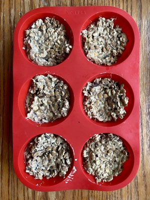
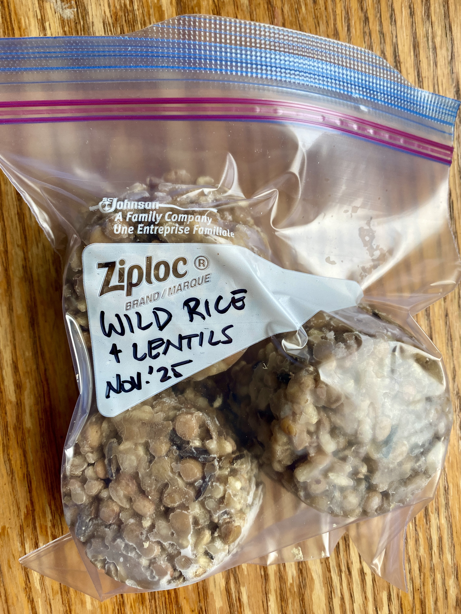
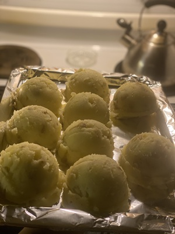
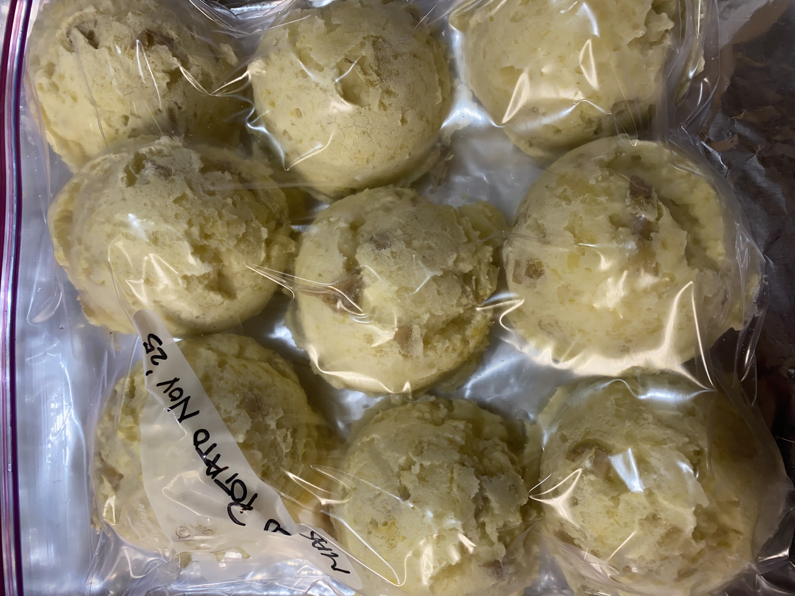
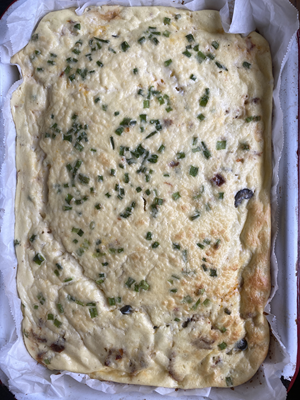
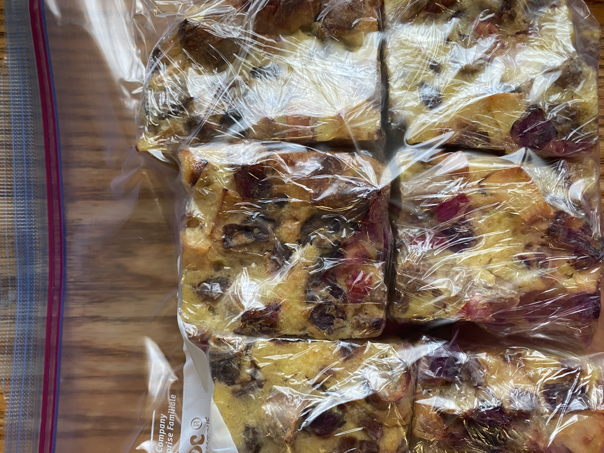

Muffin-Tin Method
The cornerstone of Caring Kitchen. Any meal can be frozen in a muffin tin for stackable meal
sizes later.

Muffin tins are easy to thrift in all different sizes. Both the silicone and tin type work just as
well.

Once frozen, just pop them into a labled and dated freezer bag and future-you will thank you for the
effort.
Ice-Cream Scoop
This works great for mashed potatoes and anything else with enough moisture to hold it's shape.

The trick is to add butter (or margarine, or olive-oil) and cream (or fresh or canned milk) with your
favorite seasonings.

Plain potatoes thaw with a strange texture but the additon of fats have them tasting just
as great the second time.
Casserole-Dish
This is the simplest way to do single servings with the least amount of clean-up. Just pour in the
recipe and bake.

Once cool, cut into desired portions and wrap with cellophane before putting into a freezer bag.

You could even skip the cellophane but it's an extra layer protection against freezer burn.
.png "Caring Kitchen Logo")